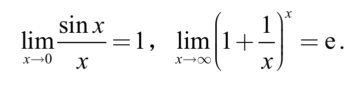

福建省普通高校专升本考试
《高等数学》考试说明
普通高校专升本考试（以下简称“专升本考试”）是普通高校全日制高职应届毕业生升入普通高校全日制本科的选拔性考试，其目的是科学、公平、有效地测试考生在高职阶段相关专业知识、基本理论与方法的掌握水平和分析问题、解决问题的能力，以利于各普通本科院校择优选拔，确保招生质量。专升本考试贯彻党的教育方针，落实立德树人根本任务，促进高素质技术技能人才成长，培养德智体美劳全面发展的社会主义建设者和接班人。
《高等数学》作为专升本考试的公共基础课，其考试说明依据福建省高职院校高等数学课程标准以及本科高等数学课程教学要求，结合本省实际制定。注重考查考生对所学高等数学相关基础知识、基本技能和基本思想方法的掌握程度，考查考生的基本数学能力。
一、考核目标与要求
（一）知识要求
知识是指福建省高职院校高等数学课程标准基础模块必修内容和职业模块限定选修内容中的数学概念、性质、法则、公式、公理、定理，以及由这些内容反映的数学思想方法，也包括按照一定程序与步骤进行运算、分析、解决问题等基本技能。
对高等数学知识的要求依次是了解、会、理解、掌握四个层次。
1.了解是指初步知道知识的含义及其简单应用。
2.会是指在了解知识的基础上，能够进行简单的运算和应用。
3.理解是指正确认识知识的概念和规律（定义、定理、法则等）以及其它相关的联系。
4.掌握是指在理解知识的基础上，能够应用知识的概念、定义、定理、法则去解决一些问题。
（二）技能与能力要求
通过高等数学的学习，学生应具备一定的数学技能与能力，包括：数学运算技能，逻辑推理能力，直观想象能力，数学应用能力。（因考试不使用计算器和计算机，故上述技能不涉及到计算工具的使用）。各项技能和能力具体要求如下。
1.数学运算技能：能够根据概念、公式、法则，或按照一定的操作步骤，正确地进行运算求解。
2.逻辑推理能力：能够对问题或数学材料进行观察、比较、分析、综合、抽象与概括；会用演绎、归纳和类比等进行判断与推理；能运用数学形式准确、清晰、有条理地进行表述。
3.直观想象能力：能根据条件作出正确的图形，根据图形想象出直观形象；能正确地分析图形的基本元素及其相互关系；会运用图形形象地提示问题的本质。
4.数学应用能力：能阅读、理解陈述的材料，提炼现实问题中各种对象的数量关系，将现实问题转化为数学问题，构造数学模型，并综合应用所学数学知识、思想和方法加以解决。
二、考试内容与要求
（一）一元函数微积分学（约80分）
1.函数、极限与连续
（1）理解函数的概念，掌握简单函数的定义域、值域的求法和函数的表示法。
（2）掌握函数的有界性、单调性、奇偶性、周期性。
（3）了解反函数概念及其图形性质。
（4）理解复合函数的概念。
（5）理解基本初等函数和初等函数的概念，掌握基本初等函数的性质及其图形。
（6）了解极限的概念及函数极限存在的条件。
（7）掌握极限的四则运算法则。
（8）掌握两个重要极限：
（9）理解无穷小的概念和性质，了解无穷大与无穷小之间的关系。
（10）掌握无穷小阶的比较方法，会用无穷小的性质、等价无穷小代换等方法求极限。
（11）了解函数极限与无穷小量的关系。
（12）理解函数连续性的概念；了解函数间断点的分类，会判断函数的间断点。
（13）理解连续函数的和、差、积、商及复合的连续性，掌握初等函数的连续性。
（14）掌握闭区间上连续函数的性质及应用。
2.一元函数导数与微分
（1）理解导数的定义，理解函数可导与连续的关系。
（2）理解导数的几何意义，掌握平面曲线的切线和法线方程的求法。
（3）掌握基本初等函数的导数公式、导数的四则运算法则及复合函数的求导法则。
（4）掌握隐函数求导法、由参数方程所确定的函数求导法。
（5）理解反函数的求导法则、对数求导法，了解初等函数的求导问题。
（6）理解高阶导数的定义，掌握显函数的二阶导数的计算方法。
（7）理解微分的定义，掌握微分的基本公式、运算法则及一阶微分形式不变性。
3.一元函数导数的应用
（1）理解微分中值定理——罗尔定理、拉格朗日定理。
（2）掌握罗必塔法则。
（3）掌握函数单调性的判定方法。
（4）理解函数极值的概念，并掌握其求法。
（5）掌握函数最值的求法，会求简单的应用问题。
（6）理解曲线的凹凸性和拐点的含义，并掌握其求法。
（7）了解函数作图的主要步骤。
4.一元函数积分学
（1）理解原函数与不定积分的概念，理解不定积分的基本性质。
（2）掌握不定积分的基本积分公式。
（3）掌握不定积分的直接积分法、换元积分法与分部积分法。
（4）理解定积分的概念及其性质。
（5）理解积分变上限函数及其求导定理。
（6）理解并掌握牛顿——莱布尼兹公式。
（7）掌握定积分的直接积分法、换元积分法和分部积分法。
（8）了解无穷限广义积分的概念，会求简单的无穷限广义积分。
（9）掌握定积分在几何及简单实际问题中的应用。
（二）空间解析几何（约10分）
1.了解空间直角坐标系，会求空间两点之间的距离。
2.了解向量的概念，会进行向量的加法与数乘运算。
3.掌握平面与空间直线的方程及它们之间的平行、垂直关系。
4.掌握求平面的点法式方程、一般式方程及用点向式求空间直线方程的方法。
5.了解球面方程及母线平行于坐标轴的柱面方程。
（三）常微分方程（约10分）
1.了解微分方程的阶及其解、通解、初始条件和特解的概念。
2.掌握可分离变量的微分方程、一阶线性微分方程的求解方法。
3.会用降阶法求解形如的微分方程。
4.了解二阶线性微分方程解的结构。
5.掌握二阶常系数齐次线性微分方程的解法。
6.会应用微分方程求解简单的实际问题。
三、考试形式与参考题型
（一）考试形式
考试采用闭卷、笔试形式。考试时间为120分钟，全卷满分100分。考试不使用计算器。
（二）参考题型
考试题型包括单项选择题、填空题、计算题、应用题等，也可以采用其它符合数学学科性质和考试要求的题型。
四、参考书目
含有上述考试内容的《高等数学》等相关参考书目。